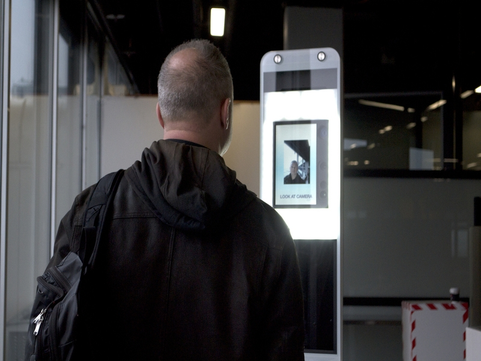

Biometric systems are used in everyday life for security reasons and you may not even know it. These systems are used in a variety of places, such as: in hotels, grocery stores, hospitals, government buildings and especially in airports. Fingerprint scanning, iris scanning, palm printing and voice pattern are just a few forms of this technology. Seeing the iPhone is a popular item, you may be interested to know that you have most likely used some type of biometric system with your iPhone. For example, the iPhone first created the fingerprint scan so an individual could unlock their phone solely from their and only their fingerprint. In this day and age majority of society uses phones and we are now able to unlock our phones with face recognition. The iPhone scans an individual’s face which is then programmed into the phone so only that individuals face is able to unlock the phone. Along with that, our iPhones can now also perform voice recognition which is another type of biometric system that secures one’s information by only responding if the voice being retrieved is identical to the one that has been implemented into the phones system. As technology advanced the iPhone was then able to create voice and face recognition, and it is almost certain these systems will continue to progress not only within the cellphone industry but in all industries. Another place you may come across such systems is when you are entering a building. Fingerprint recognition is commonly used for well protected establishments to ensure only authorised people gain access to the building. However, this type of system could also be found in apartment buildings to ensure safety for the people living there or restaurants to keep track of when an employee arrived and when they left. Biometric systems are especially used all around Airports. At many airports they have machines that scan your eyes and iris which are used to collect information about you. The data is then stored on an international database. The machines responsibility is to scan the iris and match the traits with the information stored on the database to identify the individual. Furthermore, as strange as it may sound you may even come across biometric systems in blood banks. Identity is a crucial aspect when donating blood and in the past biometric systems have not been used to keep identities. However, with the advancement in technology this important data is now being stored by scanning someone’s fingerprint or iris to obtain their necessary details. Biometric systems come in different forms and have the responsibility to verify and recognize an individual’s identity based on physical and behavioral traits. They appear in our everyday life and we often do not even realize it. The next time you unlock your phone, check in at an airport, enter a protected building or perhaps donate your blood you are highly likely to come across a biometric system.
References
Porter, K. (n.d.). Biometrics and biometric data: What is it and is it secure? Retrieved from https://us.norton.com/internetsecurity-iot-biometrics-how-do-they-work-are-they-safe.html.
Biometrics. (2019, November 23). Retrieved from https://en.wikipedia.org/wiki/Biometrics.
What is Biometric Technology. (n.d.). Retrieved from https://www.biometriccentral.com/what-is-biometric-technology/